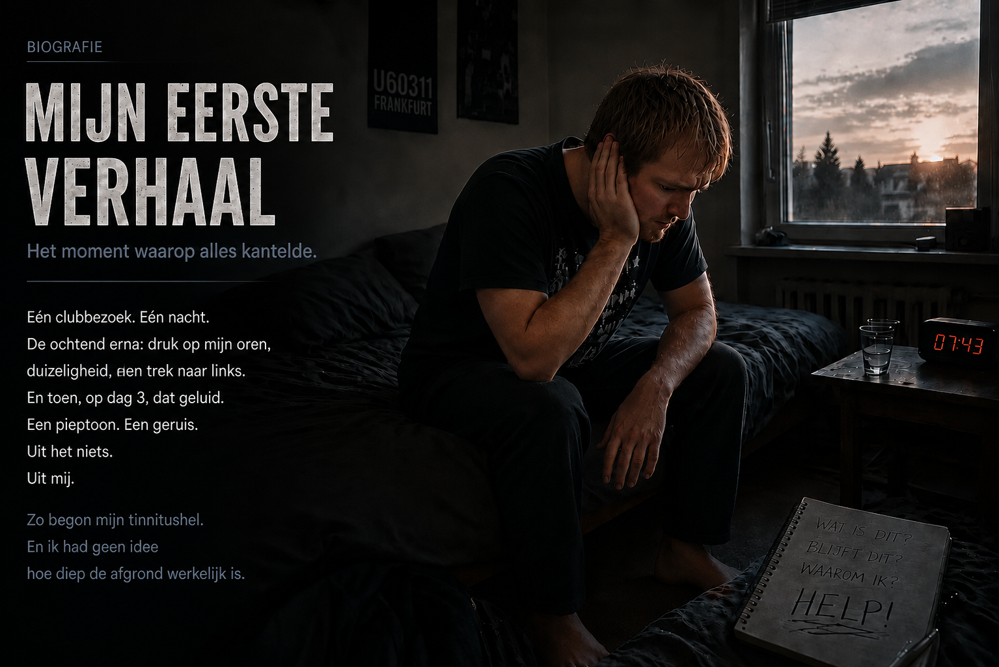
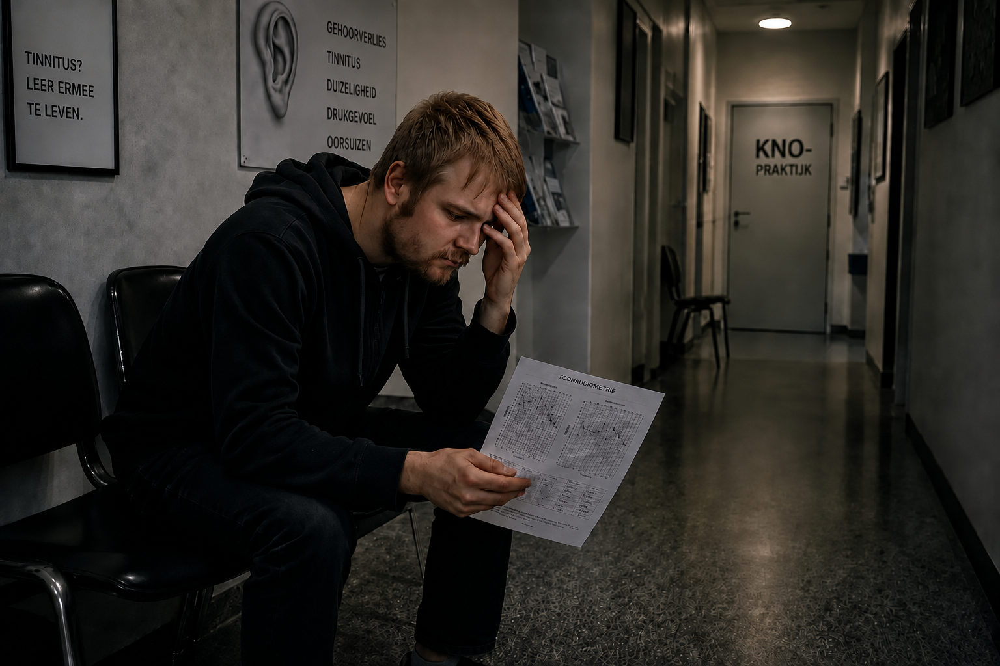
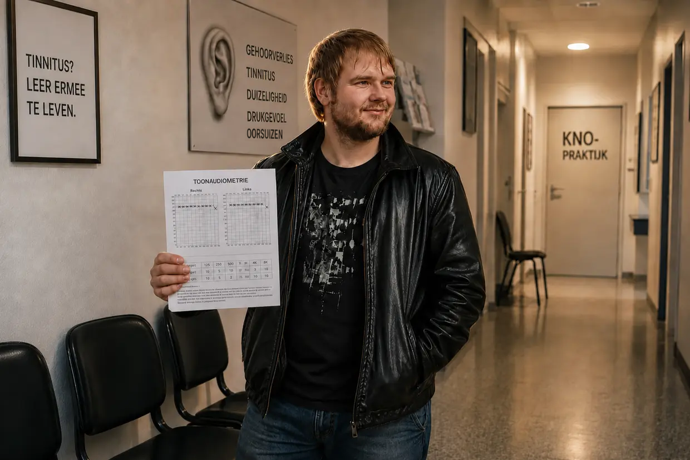

Mijn weg naar de tinnitushel – deel 1: de helletocht
Hallo, mijn naam is Dustin Müller. Omdat ik zelf tinnitus heb gehad – en meer dan eens – voelde ik een grote behoefte om deze site te schrijven: om andere mensen met tinnitus met mijn speurwerk en mijn eigen ervaringen te laten zien hoe ik tot volledige genezing ben gekomen. Maar voordat ik uitleg wat er in mijn oren is gebeurd, moet ik vertellen hoe het bij mij eigenlijk allemaal begon.
Eén ding vooraf: dit is inmiddels meer dan 14 jaar geleden. De meeste scènes herinner ik me alsof het gisteren was – bij een paar details kan ik iets door elkaar halen. Dat zou te begrijpen moeten zijn.
Zoek je de korte versie? Deze lange versie gaat tot in de kleinste details – de audiogrammen, de bezoeken aan de KNO-arts, elke afzonderlijke doorbraak. Wil je het compacter, dan is de korte versie de juiste plek.
Najaar 2011: de eerste disco
Je bent 23, je hebt energie voor tien en je denkt dat je lichaam alles wel kan hebben. Met die mindset ging ik ook met mijn oren om. Ik hield van muziek. Jarenlang zette ik mijn koptelefoon zo hard dat mijn ouders het door de dichte kamerdeur konden horen. Mijn systeem was allang murw, zonder dat ik het wist.
Het begon met mijn neef. Ik was nog nooit in een disco geweest, en hij zei: kom deze keer mee, naar de U60311 in Frankfurt – ‘die is niet zo vol als andere, dat is hartstikke leuk’. Omdat ik normaal heel graag privé met hem feestte, aarzelde ik even en stemde toe. Al op de trap naar beneden, terwijl de ruimte zeker nog 40 meter verderop was, was de bas heftig te voelen. Toch: ik had er zin in. Naïef als ik was, ging ik binnen op de beste vrije plek staan – een kleine zes tot acht meter voor de boxen, met mijn linkeroor precies naar de geluidsbron. Zo’n vier uur. Dat was precies het punt waarop mijn eerste tinnitus ontstond.
De ochtend erna: naar links trekken
Pas op de trap naar boven, richting de uitgang, merkte ik wat een waanzinnige druk ik op mijn oren had – links meer dan rechts. Alles klonk dof, als onder water, en sommige geluiden deden een beetje pijn. Behoorlijk van mijn stuk gebracht vroeg ik mijn neef of hij die druk ook had. ‘Ja, is niet erg, gaat wel weer weg.’ Dus dacht ik er verder niet over na, we gingen per spoor naar huis en ik ging pitten – met in mijn achterhoofd: morgen is dit duidelijk beter.
De volgende ochtend schrok ik wakker uit een warrige droom door de drank – en viel met heftige evenwichtsstoornissen meteen terug in mijn kussen. Ik bleef een paar minuten liggen om mezelf te herpakken. Bij de tweede poging, heel langzaam, merkte ik hoe heftig ik naar links trok: mijn hoofd recht houden was moeilijk, opstaan zonder naar linksvoor weg te kantelen bijna onmogelijk. Uiteindelijk lukte het, en ik sloeg me door de dag heen – door actief tegen te sturen. De druk was er nog, maar alleen nog links en duidelijk zwakker dan ’s nachts.
Ik ben iemand die veel vertrouwen heeft in wat zijn lichaam aankan. Dus maakte ik me niet al te veel zorgen: de tijd regelt dat wel. En zo leek het ook – het trekken naar links werd minder, de druk verdween bijna. Ik haalde opgelucht adem.
Dag 3: het komt uit mij
Dag 3 na de disco. Ik werd wakker en hoorde opeens een geluid als een piepende koelkast. Wat is dit verdomme? Ik hield mijn hoofd tegen de muur. Luisterde bij het stopcontact. Checkte de computer, de wekker. Niets. Toen legde ik mijn handen op mijn oren.
O shit. Het komt uit mij. Het zit in mijn hoofd.
Ik stond minutenlang in shock. Wat is dit? Blijft dit nu? In mijn linkeroor een gebrom, geruis, sirenes en een hard gepiep. In mijn rechteroor nam ik op dat moment al een zacht piepje waar. Ondanks de schok dacht ik: dat gaat wel weer weg.
De termijn van 14 dagen
Ik deed wat waarschijnlijk iedereen in zo’n situatie doet: een afspraak maken bij mijn KNO-arts, die ik al sinds mijn kindertijd kende – en tot die tijd het internet uitpluizen. Waarom eerst die druk, waarom die duizeligheid, en waarom nu die tonen die niet ophouden? Binnen een paar minuten had ik de antwoorden: acuut gehoorverlies en schade aan het binnenoor. Blijvend gehoorverlies, vaak oorsuizen. En toen die zin waarvan het bloed in mijn aderen stolde: ‘Het moet binnen 14 dagen behandeld worden – anders wordt het chronisch en houd je het je leven lang.’ Op het forum tinnitus.de las ik discussies van mensen die al vijf jaar met dat ding leefden. Vijf jaar? Heilige shit.
De afspraak was over maar een paar dagen. Dus sprak ik mezelf moed in en hield vol.
KNO-arts nummer 1: ‘Luister er niet naar’

Toen ik eindelijk de behandelkamer in mocht, voelde ik echt opluchting: hoop, straks komt alles goed. Ik vertelde kort en bondig over het discobezoek en wat me sindsdien dwarszat. Hij luisterde, zei eerst niets en keek met zijn instrumenten in mijn oren. Ik vroeg door: wat moet ik nu doen, wat is er precies gebeurd? Hij, al een beetje geïrriteerd: ‘Jaa, luister er niet naar. Luister naar wat muziek om die tonen te overstemmen.’ Ik: ‘Maar het moet toch binnen 14 dagen behandeld worden? En is nog meer geluid echt verstandig?’ Hij: ‘We doen eerst een audiometrie.’ Dat zei hij, waarna hij de kamer verliet.
Verbouwereerd keek ik hem na en vroeg me af of een andere arts er misschien meer van wist. Ik had die gedachte nauwelijks afgemaakt of de assistente riep: meekomen, audiometrie.
De audiometrie: pas in de stilte merk je het
Pas toen ik de geluidscabine binnenstapte, merkte ik hoe heftig mijn gehoorschade werkelijk was. De ruimte was volledig van de buitenwereld geïsoleerd – en in die stilte hoorde ik elk afzonderlijk geluid in mijn oren, ongelooflijk luid. De test bestond uit drie delen: eerst de frequentie en het volume van mijn tinnitus bepalen, dan het algemene gehoor, tot slot de beengeleiding via de schedel – daarvoor zat de koptelefoon onder of boven mijn oren, zo precies weet ik het niet meer. Daarna: terug naar de wachtkamer.
Het oordeel: ‘Leer ermee te leven’
Na een korte tijd riep hij me weer binnen, en deze keer werd het een langer gesprek. Met de uitslag in zijn hand legde hij me op ernstige, stellige toon uit dat ik door dat discobezoek mijn gehoor blijvend licht had beschadigd en dat daar niets aan te doen was.
Ik was even echt sprakeloos. Ondertussen onderzocht hij nogmaals mijn oren. Een beetje trillerig vroeg ik of er niet toch een kans was om dit weer goed te krijgen. Weer een beetje geïrriteerd: ‘U moet ermee leren leven. Er niet naar luisteren, afleiding zoeken, koptelefoon op.’ Op mijn – achteraf absurde – vraag of ik nog naar disco’s mocht: ‘Ja, dat geeft geen problemen.’ Daarmee nam hij afscheid en verliet de kamer.
De eed
Verbijsterd en behoorlijk in de put verliet ik de praktijk, de uitslagen in mijn hand. Op de weg naar huis ging er maar één ding door mijn hoofd: hiermee ga ik in geen geval mijn hele leven leven. Ik zwoer mezelf: ik probeer alles wat maar denkbaar is om de tinnitus weg te krijgen – of ik wil niet meer leven. (Dat zei ik eerder zomaar dan dat ik het echt bloedserieus meende. Toch: de toestand was verpletterend.)
Eenmaal thuis kreeg ik weer een nieuwe golf hoop. Ik kon gewoon niet geloven dat geen enkele arts in Duitsland weet wat tinnitus is en hoe je het behandelt. Dus ging ik meteen weer achter de pc zitten en schreef andere KNO-praktijken aan, tot ik een afspraak op korte termijn had.
“Of de tinnitus gaat, of ik ga. Ik laat niet toe dat dat ding mijn leven gaat bepalen. Ik moet zelf gaan kijken wat je eraan kunt doen.”
Wat het internet te bieden had

In die paar dagen tot de volgende afspraak ging ik me voor het eerst echt in tinnitus verdiepen – en stuitte ik op een overweldigende hoeveelheid informatie over hoe je met tinnitus omgaat, wat zou moeten helpen en wat tinnitus überhaupt zou zijn:
- Cortison & ginkgo: ontstekingsremmend, bevordert de doorbloeding zodat het gehoor herstelt – dat klonk logisch.
- Kaak en nek (CMD/HWS): spierspanning zou de geluiden veroorzaken. Ik merkte zelf wel dat ik de toon met kaak- en hoofdbewegingen duidelijk kon beïnvloeden – maar ik had dat ding in de disco opgelopen. Dat een spier hem in stand hield, geloofde ik ook toen al niet echt.
- TRT en maskeren: overstemmen met andere geluiden. Dat kon ik begrijpen: op aanraden van de arts luisterde ik immers nog steeds naar muziek, en daarmee kon ik de toon goed overstemmen, soms zelfs merkbaar verminderen – alleen kwam hij na een tijdje altijd terug. En dan agressiever en luider dan daarvoor. Waarom, dat was toen voor mij een groot raadsel.
- Voedingssupplementen: daar lachte ik om. Mijn neef – uitgerekend die van de disco – nam toen zo’n A-tot-Z-preparaat, en ik kraakte hem tegenover mijn moeder af: hoe kun je daar nou intrappen en er geld aan verspillen? Het lichaam heeft dat niet nodig, we krijgen dat allemaal via onze voeding binnen. Hij bood me er zelfs een paar aan. Ik dacht alleen: laat me daarmee met rust. Dat ik jaren later juist via die weg van mijn tinnitus af zou komen, had ik nooit kunnen dromen.
KNO-arts nummer 2: ginkgo en een halve zin
Op de ochtend van de tweede afspraak was de tinnitus plotseling duidelijk luider – ook het zachte piepje rechts. Ik kon niet verklaren waarom. (Later kon ik het terugvoeren op de blootstelling aan geluid: muziek en ’s nachts witte ruis, allemaal op advies van de arts.) Nog bedrukter dan ik al was, ging ik op weg.
Deze KNO-arts was echt vriendelijk en bemoedigend. De tinnitus was nog vrij recent, die zou na verloop van tijd zeker weer verdwijnen. Hij schreef ginkgo voor en raadde voldoende slaap en beweging aan voor de doorbloeding. Ik stelde mijn vragen. Koptelefoon? ‘Dat is zelfs goed om u af te leiden.’ Disco’s? Daar was ik verrast: die moest ik eerst een paar weken mijden. En die drie maanden waarna tinnitus chronisch zou zijn? ‘Laten we eerst kijken hoe het de komende weken met u gaat.’ Ik: ‘Maar is hij dan echt niet meer te genezen?’ Hij, een beetje overrompeld: ‘U kunt ook leren hem te compenseren – dus helemaal weg te filteren.’
Daar was hij weer, die halve zin.
Vele weken gingen voorbij
Zo gingen de volgende dagen en weken voorbij, in de hoop dat afwachten, ginkgo en de tips van de arts de tinnitus minder zouden maken – of helemaal zouden laten verdwijnen. De toon ging op en neer. Overdag had ik door school genoeg afleiding. ’s Avonds tot ik in slaap viel, overstemde ik hem met muziek via mijn koptelefoon en witte ruis van YouTube – watervallen, de hele avond. Zo was het enigszins te verdragen. Dacht ik.
Het tweede acute gehoorverlies: een halve salto in mijn hoofd
Op een gegeven moment, na een paar weken, werd ik wakker geschud. Ik werd wakker en had weer dat drukgevoel in mijn linkeroor. Ik praatte mezelf aan dat dat na acuut gehoorverlies waarschijnlijk normaal was, dat zoiets weleens terugkwam en niets te betekenen had – en reed naar school. Al onderweg merkte ik dat ik duizelig was en weer naar links trok; mijn rijstrook houden werd moeilijk. Eigenlijk was omkeren verstandiger geweest. Maar de lessen kostten geld, en ik wilde niets missen.
En ik had de autoradio aan. Echt hard. Mijn lievelingsliedjes waren op, ik ging er helemaal in mee, voelde de bas in de auto trillen – mensen in de auto naast me keken opzij. Het voelde geweldig, afgezien van die klotetinnitus. Achteraf was het bijna driekwart disco.
In het eerste lesuur begon het: vervormd horen, en normale geluiden deden plotseling pijn – hyperacusis. Ik probeerde de les te volgen en het allemaal te negeren. Dat lukte maar half; ik verstond nauwelijks wat er vooraan werd gezegd. In de uren daarna nam de druk in mijn linkeroor steeds verder toe. Onrustig, maar zonder iets te laten merken, zat ik het uit – tot mijn gezichtsveld opeens verticaal begon te draaien. Als een halve salto in mijn hoofd.
Dat duurde maar een paar seconden. Toen was het beeld weer normaal, maar bleven er heftige schommelduizeligheid, mijn oude neiging om naar links te trekken en dat doffe horen links over. In volle paniek probeerde ik te begrijpen wat er net in me gebeurde – en er vooral voor te zorgen dat niemand om me heen er iets van merkte. Uit schaamte. Ik wilde meteen weg, naar huis, maar ik wilde ook absoluut niet opvallen. Dus bleef ik zitten. Godzijdank duurde het niet lang meer tot de pauze. Toen de bel ging, griste ik mijn tas en maakte me uit de voeten.
De rit naar huis was onverantwoord: door de duizeligheid moest ik om de paar seconden tegensturen. Maar ik wilde gewoon alleen maar naar huis, en het was maar een kort stuk. Achteraf was dat een van de stressvolste situaties ooit – mijn lichaam deed helemaal gek, en dan ook nog de angst dat iemand mijn paniek zou opmerken.
KNO-arts nummer 3: ‘Opnieuw acuut gehoorverlies’ – en een aanbod
Eenmaal thuis aarzelde ik deze keer niet en maakte nog diezelfde dag een afspraak – KNO-arts nummer 3, op heel korte termijn. Ik vertelde hem wat er tijdens de les was gebeurd. Hij luisterde, maar sprak eerst geen oordeel uit en stuurde me naar een gehoortest en – omdat ik een verstopte neus noemde – een reuktest. Daarna een test op ‘goedaardige positieduizeligheid’: het hoofd in bepaalde posities leggen. Dat veranderde absoluut niets. Hij verliet de kamer en zei dat een vrouwelijke collega me zo nog eens zou roepen.
De arts zei op bezorgde maar vertrouwenwekkende toon dat ik opnieuw acuut gehoorverlies had – dat zou zeer waarschijnlijk in de komende 14 dagen overgaan. En omdat uit de reuktest bleek dat ik minder goed kon ruiken dan de gemiddelde mens, kon de tinnitus ook door de verstopte bijholten komen. Dat ik opnieuw acuut gehoorverlies had, schokte me; de rest gaf me bijna weer moed. Tot ze er totaal onverwacht aan toevoegde: ‘Weet u, veel mensen raken door zoiets in een depressie. Als de klachten blijven, schrijf ik u graag antidepressiva voor.’
Ik zat daar en dacht dat ik het niet goed hoorde. Mijn evenwicht was ingestort – en psychofarmaca moesten de oplossing zijn? Toen ik de praktijk verliet, dacht ik alleen nog: alsjeblieft, lieve God, laat dit hele scala aan symptomen in die 14 dagen verdwijnen. Ik wilde hiermee niet leven, en ik wilde heel zeker geen psychofarmaca.
KNO-arts nummer 4: de specialist en het idee dat het tussen de oren zit
Thuis bleef ik maar nadenken over wat ik nog kon doen – en toen schoot me de cortisonbehandeling weer te binnen waarover ik op internet had gelezen. Geen enkele arts had die tot dan toe ook maar genoemd. Dus zocht ik deze keer gericht naar een KNO-arts die gespecialiseerd was in acuut gehoorverlies en tinnitus. Het duurde even voordat ik terechtkon.
Omdat de schommelduizeligheid, evenwichtsstoornissen, het vervormde horen, de overgevoeligheid, druk in het oor en natuurlijk de tinnitus onveranderd bleven, stopte ik tijdelijk met school. En bracht ik een groot deel van de dag op het forum tinnitus.de door. Daar viel me op dat heel veel mensen hun tinnitus net zo hadden gekregen als ik – disco, harde muziek, een knaltrauma. En ik las wat anderen al hadden geprobeerd: hyperbare zuurstoftherapie (op het forum eerder negatief beoordeeld – al snel weer genegeerd), TRT-apparaten (naar verluidt alleen op korte termijn, op lange termijn vaak erger, en niet vergoed door de zorgverzekering – van mijn lijst geschrapt), zelfs operaties met een implantaat (voor mij alleen als allerlaatste noodoplossing – helemaal achteraan op de lijst). Over de cortisonbehandeling werd overal gezegd: helpt niets. Ik nam het voor kennisgeving aan. Maar ik had toen nog een heel sterk geloof in artsen, en ik wilde niet mijn leven lang spijt hebben dat ik een zo geprezen mogelijkheid niet had geprobeerd.
Toen de afspraak. KNO-arts nummer 4. Ondanks alles had ik weer veel hoop: een specialist, en de cortisonbehandeling was nog een optie. Eerst wilde hij een audiometrie – toen ik zei dat ik er al twee had gehad, liet hij dat zitten, vanwege de zorgverzekering. Dus vertelde ik. De disco, de andere KNO-artsen, school, de salto, alles, in een lang, monotoon relaas. Hij luisterde zonder me te onderbreken. En toen, in plaats van ergens op in te gaan: ‘Hebt u weleens van cognitieve gedragstherapie gehoord?’
Ik: ‘Nee, niet echt. Wat moet dat betekenen?’
Hij: ‘Uw probleem is vooral dat u zich te veel op uw gehoorproblemen concentreert. Daarmee houdt u de tinnitus in stand en versterkt u hem.’
Ik: ‘O, dat is interessant … o zo, daarom wordt er dus steeds gezegd dat je afleiding moet zoeken.’
Hij: ‘Volgens het nieuwste onderzoek is chronische tinnitus vooral een te sterke focus van de hersenen op de geluiden.’
Ik: ‘Maar het geluid is toch door dat discobezoek ontstaan, door het acute gehoorverlies, door de beschadiging …’
Op mijn vraag over cortison: dat zou alleen in de eerste 14 dagen zin hebben. Bij mij moest men uitgaan van een fantoomgeluid – de hersenen probeerden de verloren frequenties te compenseren en maakten zelf een toon; hoe meer ik me erop concentreerde, hoe luider en blijvender hij werd. Dan nog TRT, heel veelbelovend. Ik zei dat ik andere geluiden om hem te overstemmen allang had geprobeerd en dat mijn tinnitus daar op lange termijn alleen maar erger van was geworden. Hij stond op: daarvoor moest ik de speciale apparaten gebruiken, en dat langdurig. Een handdruk, afscheid.
Het forumbericht: een laser, een arts in Regensburg – en mijn lijst
Deze keer was ik echt wanhopig. De cortisonbehandeling, in mijn ogen de meest veelbelovende mogelijkheid, was van de baan – en een ‘tinnitus-expert’ had me net uitgelegd dat mijn hoofd de geluiden zelf maakte. De enige troost: die drie maanden waren nog niet voorbij. En het forum. Daar bracht ik dagen door. Weken.
Op een gegeven moment stuitte ik in de rubriek ‘Ervaringsverhalen’, op de allerlaatste pagina’s, op een onderwerp met de naam ‘Wat heeft jullie echt geholpen’. Het eerste bericht kwam van een gebruiker die zich ‘Tinnitus-Patient’ noemde. Bij hem had maar één ding geholpen: een zogenaamde low-level-lasertherapie. Daarmee waren zijn tinnitus en alle andere oorproblemen volledig genezen, schreef hij. Al het andere – precies de dingen die ik ook al achter de rug had – had hem niets gebracht.
Dat bericht kwam toen hard bij me binnen. Ik had voor mijn gevoel het halve internet doorzocht, naar artsen, klinieken, studies, mensen met tinnitus met een erkende genezingsmethode – en dan komt iemand zomaar langs en schrijft dat hij met een bizarre lasertherapie is genezen. Meteen hoop, opluchting, vreugde. En daar vlak achteraan een flinke dosis scepsis: in de reacties eronder werd de methode met de grond gelijkgemaakt. Ik werd heen en weer geslingerd. Het zou zo mooi zijn geweest om eindelijk een strohalm te hebben.
Ik googelde: ‘Low Level Laser Therapie Tinnitus’, ‘LLLT’. En vond – net als bij TRT en al het andere – vooral slechte dingen: gevaarlijk, kwakzalverij. Het werd niet door een kliniek of een ‘gewone’ arts aangeboden, maar alleen door een zekere dr. Wilden in Regensburg. Privépraktijk, niet vergoed door de zorgverzekering, naar verluidt duur. En zo schrapte ik – met pijn in het hart – ook die therapie van mijn lijst.
Voorlopig.
Het dieptepunt: mijn eigen verjaardag
De dagen gingen voorbij, en mijn oren werden erger. Zo erg dat ik mijn eigen verjaardag – ongeveer anderhalve maand na het eerste acute gehoorverlies – moest afbreken. De hyperacusis en het vervormde horen maakten me gek, en vaak verstond ik niet meer wat mijn vrienden en familieleden zeiden: de tinnitus overstemde wat er werd gezegd, en sommige letters klonken opeens anders dan daarvoor – een ‘S’ als een ‘F’, een ‘T’ als een ‘D’. Ik hield het niet meer uit en reed naar huis.
Ook de duizeligheid werd steeds erger, soms zo erg dat ik mijn evenwicht verloor en dreigde om te vallen. (Later bleek: de ziekte van Ménière.)
Daar zat ik dan. Geen school meer, geen vooruitgang. Geïsoleerd, afgeschermd – van lawaai, van vrienden, van het leven. In de steek gelaten door de artsen, die me hadden ingeprent dat mijn hoofd op hol sloeg en dat ik antidepressiva nodig had.
In de dagen daarna kwam er echter een echte sleutelervaring bij.
De eerste sleutelervaring: het zuigertje in het universitair ziekenhuis
Alsof ik nog niet genoeg had gehad, kwam er nog iets bovenop: een fikse gehoorgangontsteking. Ik moet erbij zeggen dat ik sinds mijn kindertijd atopisch eczeem en psoriasis heb, vooral in mijn gehoorgangen – en door de aangetaste huid, zwembadwater en wattenstaafjes tegen de jeuk had ik voortdurend infecties in mijn oren. Uitgerekend in een weekend, laat op de avond. Achteraf was dat een echte gelukstreffer.
Vanwege de pijn sleepte ik me naar de spoedeisende hulp van het universitair ziekenhuis in Frankfurt. En omdat dat een goede reputatie heeft, greep ik mijn kans en vertelde de arts mijn tinnitusverhaal. Hij nam het voor kennisgeving aan, maar richtte zich eerst op de ontsteking – onderzocht mijn oren en begon mijn gehoorgangen met een piepklein zuigertje uit te zuigen.
En precies toen gebeurde het. Binnen enkele seconden voelde ik hoe de tinnitus in mijn linkeroor agressief reageerde op de herrie daar, rechtstreeks in mijn gehoorgang. Daarna bij mijn rechteroor: exact hetzelfde. Daarmee kon de theorie dat het allemaal in mijn hoofd gebeurde gewoon niet kloppen. De bron zat nog steeds daar beneden in mijn oor.
Terwijl ik nog in de stoel zat, nam ik op dat moment het besluit om uit te zoeken waarom mijn gehoor zo heftig op hard geluid reageert – en, belangrijker: wat er gebeurt als je lawaai langere tijd consequent achterwege laat.
Het universitair ziekenhuis: cortison, laptop, verbandgaas
Toen hij klaar was, vroeg hij hoe lang geleden het acute gehoorverlies was. Ongeveer twee maanden. Cortison gaf men normaal alleen in de acute fase van plotseling gehoorverlies, zei hij – maar omdat ik nog onder de drie maanden zat, was het een poging waard. Ik stemde meteen toe. Hij overlegde kort met zijn collega’s (ik was tenslotte midden in de nacht onverwacht binnengekomen), en toen gingen ze allemaal akkoord. Mijn ouders brachten me schoon goed en mijn laptop, en ik bracht de nacht in het ziekenhuis door.
De ochtend kwam, na weinig slaap – en toen ik wakker werd, merkte ik meteen dat de tinnitus nog een stuk erger was geworden. Wanhopig en tegelijk opgewonden zei ik tegen mezelf: het verband tussen lawaai en verslechtering moet gewoon kloppen. Toen werd ik naar de KNO-afdeling geroepen. KNO-arts nummer 6. Eerst een audiometrie – en inderdaad, alle waarden waren zichtbaar slechter geworden: de tinnitus luider, het gehoorverlies groter, en ook de spraakverstaanbaarheidstest viel overeenkomstig slecht uit.
Ook deze arts vroeg ik wat ik toch kon doen. Hij reageerde niet. Ik drong aan – en zei hem klip-en-klaar dat ik een einde aan mijn leven zou maken als de tinnitus niet wegging. (Zoals gezegd: eerder zomaar gezegd. Ik wilde de artsen onder druk zetten, zodat ze alles zouden doen om me te helpen.) Hij: ‘Nee toch, zegt u zoiets niet, we krijgen dit wel onder controle. U krijgt nu eerst de infusen.’
Terug op mijn kamer, vanbinnen totaal onrustig, ging ik meteen achter mijn laptop zitten. Ik moest uitzoeken hoe het zat met lawaai en die verslechtering – er werd toch gezegd dat chronische tinnitus puur tussen de oren zat. Ik googelde iets als ‘Tinnitus erger door lawaai’ – en kwam meteen weer bij die ‘Tinnitus-Patient’ van het forum terecht, deze keer op zijn eigen website. (Dat hij ook nog een eigen website had, maakte toen echt indruk op me.) Daar stond uitvoerig dat nog meer lawaai de tinnitus en alle andere gehoorproblemen erger maakt. En een link naar dr. Wilden. Ik klikte erop.
Die site was een openbaring. Wat er stond, sloot precies aan bij wat ik net tijdens het uitzuigen had meegemaakt. Ik las de site keer op keer van boven tot onder en werd er steeds zekerder van: die lasertherapie en Wildens uitspraken moeten gewoon kloppen. Mijn hoop was weer helemaal terug. Alleen: ik zat nog op school en had gewoon het geld niet voor een vermoedelijk heel dure behandeling. Dus vertrouwde ik voorlopig op de cortison.
Na drie dagen werd ik ontslagen. En verrassend genoeg was de tinnitus ergens in die dagen inderdaad merkbaar zachter en minder agressief geworden. Ik was dolblij – maar begreep niet goed waar dat nu precies door kwam.
Eerst geloofde ik dat het door de cortison kwam. Maar toen ik in de dagen daarna weer op Wildens site las hoe cruciaal het is om actief de stilte op te zoeken en het liefst oordoppen te dragen, sloeg de bliksem in: sinds de behandeling in het ziekenhuis zaten allebei mijn oren helemaal vol met verbandgaas! Mijn oren waren dagenlang van de buitenwereld afgeschermd geweest – en daarmee van elk lawaai. Je kunt je voorstellen wat er toen aan emoties door me heen ging: verbazing, hoop, opluchting, angst, woede op de artsen die zoiets niet weten. Maar er zat nog een te grote dosis scepsis bij. Misschien was het allemaal maar toeval. Misschien wordt het vanzelf weer erger. Misschien kwam het toch alleen door de cortison.
Maar toen het verbandgaas er na ongeveer een week uitging, merkte ik het heel duidelijk: mijn gehoor was wat hersteld, alle symptomen waren minder geworden. Ik wist nog niet wat ik daarmee aan moest – maar vanaf nu stelde ik mijn oren, tegen elk medisch advies en de algemene mening op internet in, niet meer aan onnodig lawaai bloot. Geen muziek, geen koptelefoon, niet stofzuigen.

De knal: de tinnitus is niet iets onveranderlijks
Er gingen een paar dagen voorbij. En toen kwam het definitieve bewijs – opnieuw dankzij de ontsteking. Omdat er nog een lichte restontsteking was, moest ik steeds weer een klein flesje waar crème uit kwam direct bij mijn oor houden. En plotseling klonk er een echt heftige knal midden in mijn oor (waarschijnlijk had zich een propje bij de opening gevormd). In een fractie van een seconde gierde mijn tinnitus omhoog – MAAR binnen de kortste keren zakte hij terug naar zijn ‘normale’ niveau.
Na die knal was ik zó euforisch, omdat ik besefte: tinnitus is niet iets ‘onveranderlijks’, maar dynamisch. Hij reageert op lawaai – en als je nog een stap verdergaat en vrijwel in stilte leeft, neemt hij af. In elk geval bij mij, bij tinnitus door lawaai, viel dat vanaf nu niet meer te ontkennen.
Vanaf nu bracht ik zo veel mogelijk tijd in stilte door. Muziek, films en afspreken met vrienden werden een soort beloning – als ik mijn oren daarvoor lang genoeg rust had gegeven. En als ik het deed, dan zonder koptelefoon, heel zacht en heel kort.
De dagen en weken gingen voorbij. De maanden gingen voorbij.
Maand 8: stilstand bij 25 procent
En wat zal ik zeggen: de tinnitus nam inderdaad van maand tot maand af, samen met de andere gehoorproblemen. Terugkijkend zou ik zeggen dat hij ongeveer acht maanden na die avond in de disco een kwart zachter was – en zich daar stabiliseerde.
Natuurlijk kon ik die volledige stilte niet de hele tijd volhouden. Alleen al een noodzakelijke autorit – 200 kilometer heen en terug, en ja, zelfs met gesloten ramen is een langere rit lawaai voor je oren – liet de tinnitus terugspringen naar het niveau van een week eerder. Een week voor niets mijn oren ontzien. Hetzelfde gold voor elke andere vorm van geluidsbelasting (destijds allemaal uitgeprobeerd). Zelfs een poging om ’s avonds even met een koptelefoon te luisteren, op een kwart van het gebruikelijke volume, zorgde ervoor dat het herstel stopte of achteruitging.
En toen bleef hij gewoon steken. Bij ongeveer 20 tot 25 procent verbetering – wat ik ook probeerde. Ik meed gesprekken, droeg voortdurend oordoppen, zat de hele dag alleen in mijn kamer en had zelfs de tikkende wandklok weggehaald. Ik ging niet eens meer boodschappen doen. Het enige wat ik in die weken deed, was lezen en gamen – zonder geluid, spreekt voor zich. Ik weet het, dat leest al behoorlijk paranoïde. Maar ik was het na acht maanden tinnitus en zes maanden zonder iets mee te maken zó spuugzat dat ik dat maar op de koop toe nam.
Toch: ik luisterde ’s ochtends heel aandachtig, vaak met oordoppen om het beter te kunnen controleren – en er gebeurde niets meer. Nul.
Op een gegeven moment was zo’n leven in volledige stilte en zonder mensen gewoon niet meer uit te houden. Uit verlangen begon ik weer min of meer normaal te leven. En het onvermijdelijke gebeurde: het alledaagse lawaai maakte de tinnitus weer duidelijk luider, zelfs met oordoppen – hoewel ik muziek, stofzuigen en al het andere dat hard klonk nog steeds strikt meed. Dat maakte me kapot. Ik had echt gedacht dat ik de oplossing had gevonden en het alleen lang genoeg moest volhouden. Ik zat in een dilemma.
Kaak, nek, atlas: de doodlopende weg
Dus ging ik weer achter de pc zitten en zocht ik alles over het verband tussen de kaak en tinnitus. Het duurde niet lang voordat ik op CMD stuitte – craniomandibulaire dysfunctie. De symptomen klopten precies: geknak bij het kauwen – check. Pijn bij de slapen, spanningshoofdpijn – check. Pijn aan mijn tanden, zoals de tandarts al tegen me had gezegd – check. En CMD zou vaak samengaan met een syndroom van de nekwervelkolom – ook van mijn nek had ik vaak last. Bij de tandarts kreeg ik een opbeetplaat. In een orthopedisch centrum werd na een CT-onderzoek een syndroom van de nekwervelkolom vastgesteld; als dat verholpen was, zou ook de tinnitus verbeteren, verzekerde de arts me. Of hij al andere mensen met tinnitus had geholpen? Kort en bondig: ‘Ja.’
Hij schreef een speciale krachttraining voor (Med X), die gericht onevenwichtigheden tussen de spieren in de romp, de schouders en vooral de nek verhelpt. Zo gezegd, zo gedaan. Met een ijzeren wil hield ik beide vol – ’s nachts de opbeetplaat, regelmatig trainen – en bleef ik daarnaast de stilte opzoeken. Zelfs onderweg naar de training droeg ik oordoppen, en in de auto daar nog gehoorbeschermers voor bouwvakkers overheen.
Er gingen vele weken voorbij. Mijn kaak en nek werden beter. Toen ik de grens van twee maanden bereikte, kwam de ontnuchtering: aan de tinnitus veranderde absoluut niets. Ik begreep het niet – ik merkte toch nog steeds dat hij op kaak- en hoofdbewegingen reageerde door schriller te worden. Er moest toch een verband zijn. En toen bedacht ik dat er nog een strohalm was: de atlascorrectie. Die had ik afgewezen zolang ik de artsen achter me had. Nu zat er niets anders op dan mijn ouders om geld te vragen.
Na wat heen en weer had ik het, en een paar dagen later reed ik de ongeveer 200 kilometer naar de Heilpraktiker. En inderdaad: anders dan de artsen vóór hem voelde en zag hij – aan mijn manier van lopen en een verschil in beenlengte – dat mijn atlas duidelijk scheef stond. Met een speciaal apparaat maakte hij de nekspieren los, daarna bracht hij de atlas met gerichte handgrepen terug op zijn plaats. Man, wat was dat een vreemd gevoel. Je kunt wel raden wat ik als eerste deed? Precies: luisteren of ik verschil hoorde. Alleen had de lange autorit de tinnitus sowieso al veranderd, en de Heilpraktiker zei dat het allemaal pas na verloop van tijd zou doorwerken.
Terloops vertelde ik bij de anamnese over mijn gastritis, waar ik al bijna een jaar mee tobde. Hij raadde me aan anders te gaan eten en psylliumschillen, een mengsel van mineraalaarde en probiotica te nemen. En inderdaad: daarmee kreeg ik die hardnekkige maagslijmvliesontsteking definitief weg. Dat had toen al veel indruk op me gemaakt.
Opnieuw gingen de maanden voorbij. Ik had de tinnitus nu een jaar, de atlascorrectie was ruim twee maanden geleden – en er gebeurde: niets. Goed, bijna niets: mijn nek en kaak waren zo goed als klachtenvrij. Maar de tinnitus liet zich daar niet door imponeren. Ik kon hem nog steeds met mijn kaak en nek beïnvloeden, en toch had elke behandeling van die lichaamsdelen gewoon niets opgeleverd. Ik begreep er helemaal niets meer van.
De laatste strohalm: een telefoontje naar Regensburg
Het laatste wat overbleef, was de lasertherapie. Na dagen van wikken en wegen en nog eens aandachtig lezen op Wildens site stond mijn besluit vast: ik moet dit proberen, ook al kost het honderden euro’s. In de vele maanden waarin ik niet naar buiten ging en ook niets kocht, had ik tenminste wat geld opgespaard. Dus belde ik. Over de kosten zei men nog niets – ik moest eerst mijn audiometrie per e-mail naar de praktijk sturen. Zo gezegd, zo gedaan.
Mijn mail, maart 2012 (oorspronkelijke bewoordingen):
Geachte heer Wilden,
allereerst heel, heel hartelijk dank voor uw geweldige inspanningen om uitleg te geven over de schade in het binnenoor, waarmee u vele andere artsen ver vooruit bent!
Ik schrijf u omdat ik graag van u zou willen weten hoe u de bijgevoegde gehoorcurve zou beoordelen en of en hoe lang de regeneratie met een low-level-laser ongeveer zou duren.
P.S.: Dankzij uw geweldige website, dasgesundeohr.de, ben ik al in staat geweest mijn tinnitus een stuk te ‘kalmeren’.
P.P.S.: Mijn tinnitus bestaat uit een zachtere ruis en een vrij luide pieptoon in beide oren – daar heb ik sinds iets meer dan een jaar last van als gevolg van twee plotselinge gehoorverliezen, veroorzaakt door te harde muziek.
Met vriendelijke groet, Dustin Müller
Het antwoord, 06.03.2012:
Geachte heer Müller,
hartelijk dank voor uw vraag, uw gehoorcurve en uw positieve reacties op www.dasgesundeohr.de en onze aanbevelingen daar voor actieve zelfbescherming tegen alledaagse geluidsniveaus.
Uw gehoorcurve toont een voor uw klachten kenmerkende overbelasting van het binnenoor aan beide kanten in het hoge frequentiegebied (4 kHz), links meer dan rechts. Omdat de overbelasting van uw binnenoor in het 4kHz-gebied nog net boven of precies bij 30 dB ligt, bevinden uw gehoorcellen daar zich op een kwaliteitsniveau dat zeer goed reageert op de hooggedoseerde Low-Lasertherapie volgens Dr. Wilden®. Dat wil zeggen dat u van een therapie van 5–10 dagen zeer goede resultaten mag verwachten.
U kunt mij hierover ook gerust bellen.
Met vriendelijke groet,
Dr. med. Lutz Wilden.
Voor alle binnenoorpatiënten is het belangrijk zich te beschermen tegen alledaagse geluidsniveaus.
Daarmee stond mijn besluit definitief vast. Ik belde nog eens en sprak deze keer echt met dr. Wilden zelf. De precieze woorden herinner ik me niet meer – alleen dat hij me verzekerde dat mijn oren heel goed op de laser zouden reageren; er waren echter heel wat behandelingen nodig, en de totale kosten kon hij pas na de eerste sessies noemen. De afspraak zou in de komende weken plaatsvinden.
Daar kwam het nooit van. Want heel kort na dat telefoongesprek gebeurde het allerbelangrijkste. En dat had met mijn vader te maken.
Vitamine B12: de belangrijkste (toevallige) sleutelervaring
Mijn vader leed toen aan polyneuropathie, een zenuwziekte. Omdat er ondanks medicijnen geen verbetering optrad, liet hij – op aanraden van mijn zus – bij de huisarts een vitamine-B12-test doen. Uitslag: een uitgesproken tekort. De arts schreef B12-ampullen voor en liet hem zien hoe je jezelf de injectie geeft. Toen hij zichzelf op een avond pal voor mijn ogen een injectie gaf, zei hij kort daarna: de pijn was minder en hij had het weer warmer. Je kon het aan hem zien. Zo’n klein ampulletje met rode vloeistof – en dat doet zoiets?
Die scène ging maar niet uit mijn hoofd. Ik las erover: B12 is dé zenuwvitamine. Bij een langdurig tekort kunnen zenuwen blijvend beschadigd raken. Vooral vegetariërs lopen risico – dat was ik sinds mijn vijftiende – en mensen met gastritis, waar ik net vanaf was. Houdt die kwelling dan nooit op? Eerst meer dan een jaar die oren, en nu misschien blijvende zenuwschade? Gedreven door die angst ging ik naar mijn huisarts (dezelfde als die van mijn vader). Hij stemde ermee in. De dagen gingen voorbij.
Uitslag: mijn waarde zat maar net boven de grens voor een tekort. Het was weliswaar niet zo erg als bij mijn vader, maar mijn waarde zat helemaal aan de onderkant van de schaal. Ik zat daar en hoorde in gedachten de volgende zin al – ‘Goed, dan heeft ook u tijdelijk injecties nodig.’ Maar nee. Mijn huisarts zei alleen: ‘Goed, u zit dus nog binnen de normale waarden en heeft voorlopig geen injecties nodig.’ Ik probeerde hem ervan te overtuigen dat ik binnen de kortste keren echt een tekort kon krijgen. Hij was niet op andere gedachten te brengen. En omdat mijn vertrouwen in artsen toen nog altijd groot was, slikte ik mijn ongenoegen in en vertrouwde ik hem. Aangeslagen en gefrustreerd verliet ik de praktijk.
’s Avonds had mijn vader de volgende injectie nodig, en ik begon te piekeren. Zal ik hem vragen of hij mij er ook een geeft? Maar de arts zei toch dat mijn waarde in orde was – loop ik risico op bijwerkingen door een overdosis? Aan de andere kant: die dreigende zenuwschade. En bij mijn vader had het zichtbaar en voelbaar geholpen. En mijn gastritis had ook geen arts weggekregen, maar de Heilpraktiker. Dus waagde ik het en liet ik me een injectie geven – met een echt onbehaaglijk gevoel. (Belangrijk: ik raad uitdrukkelijk af om dit zonder begeleiding van een arts na te doen.)
En … wauw. Na een paar minuten voelde ik warmte door mijn hele lichaam, een betere doorbloeding – precies zoals mijn vader had gezegd. Bovendien voelde ik me evenwichtiger, helderder, fitter in mijn hoofd. Ik ging ontspannen naar bed.
De volgende ochtend: het absolute wonder. Seconden nadat ik wakker was geworden merkte ik het – de tinnitus was duidelijk afgenomen. Van 25 procent verbetering naar ruim 40. Ik lag daar, verbijsterd, de tranen nabij. Trillend en in een roes van euforie vroeg ik me elke minuut af: wat is er gebeurd? Wat heeft dit veroorzaakt?
Het duurde niet lang voordat ik weer aan de injectie dacht. Als op de automatische piloot doorzocht ik het internet naar B12 en tinnitus – en vond inderdaad het een en ander: ervaringsverhalen, aanwijzingen dat een B12-tekort tinnitus kan veroorzaken, zelfs een kleine studie waarin patiënten met tinnitus en een B12-tekort na toediening van B12 duidelijk vooruitgingen. Wat een geluk om zo’n toevallige ontdekking te doen, schoot er door mijn hoofd.
Maar nog diezelfde dag kwam de ontnuchtering: de tinnitus werd weer luider – zonder dat ik iets had veranderd. Gefrustreerd dacht ik al dat het toch alleen maar toeval was geweest. Tot me vlak voor het inslapen iets opviel: hij was wel erger geworden, maar niet tot het punt van vóór de injectie. En de volgende ochtend: weer 40 procent. En weer een verslechtering in de loop van de dag. Ik begreep er niets meer van.
Maar één ding bleef sindsdien in mijn hoofd hangen: op Wildens site stond dat zijn laser de energieproductie in de cellen stimuleert – ATP. En B12 heeft het lichaam precies daarvoor nodig. Misschien had ik die dure laser helemaal niet nodig. Misschien kon ik de energie ook via voedingsstoffen verhogen.
Galkoliek en lecithine: de bouwstof
Terwijl ik wachtte op een hooggedoseerd multivitaminepreparaat uit de VS, zat ik op een avond zoals altijd achter de pc – en kon ik me plotseling nauwelijks meer bewegen. Hevige, trekkende pijn rechts in mijn buik. Pfff … nou mooi, ook die shit er nog bij. Het internet (ik had er inmiddels handigheid in gekregen) zei: acute galkoliek door galstenen. Er gingen uren voorbij, het werd niet beter, en diep in de nacht sleepte ik me kromgebogen naar het ziekenhuis.
De arts bevestigde de galkoliek en raadde me aan meteen te blijven – de volgende ochtend zou ik worden geopereerd, de galblaas eruit. Dat was voor mij absoluut geen optie; operaties waren voor mij altijd de allerlaatste mogelijkheid. Ik vroeg naar alternatieven. Zij, zichtbaar en hoorbaar geïrriteerd: de stenen konden weliswaar ook op een andere manier worden opgelost, maar zouden steeds terugkomen zolang de galblaas bleef zitten. Na minutenlang heen en weer praten ondertekende ik een toestemmingsverklaring en ging ik op eigen risico naar huis. (Belangrijk: zoek bij galstenen beslist begeleiding van een arts – dit is mijn heel persoonlijke ervaring in een acute situatie, geen behandeladvies voor anderen.)
Zodra ik buiten was, zei ik tegen mezelf: ook hiervoor moet er een oplossing zijn, net als bij de tinnitus. En inderdaad, weer iemand in een forum die er zelf last van had gehad: hij vertelde dat zijn galstenen volledig waren opgelost door maandenlang lecithinekorrels te nemen, zichtbaar op de echo. Na mijn ervaringen met voedingsstoffen geloofde ik dat meteen, haalde ik de volgende dag een pot, nam de aanbevolen 30 gram – en voelde inderdaad hoe de druk rechtsboven in mijn buik afnam.
Het echte hoogtepunt kwam drie dagen later. Na een B12-injectie, kort daarna trouw lecithine genomen – en de dag erna was de tinnitus plotseling nog eens duidelijk zachter. Na maanden stilstand zat ik ineens op 60 tot 65 procent verbetering. Nog maar een derde te gaan tot volledige genezing! Opnieuw de tranen nabij vroeg ik me af: waarom uitgerekend lecithine? Ik las er alles over wat ik kon vinden – en stuitte op iets beslissends: lecithine is een belangrijke bouwstof voor het omhulsel van de zenuwen, de myelineschede.
Wacht eens, myelineschede? Dat had ik toch al eens gelezen. Ik opende het artikel weer: bij lawaai zou precies dat omhulsel van de zenuwcellen beschadigd raken – ‘vergelijkbaar met wanneer de plastic bescherming van een dunne stroomkabel kapot is’. En B12 zou de belangrijkste vitamine zijn voor de regeneratie van die laag. Nou zeg. Dus het gaat niet alleen om energie, maar ook om bouwstoffen!
Een paar dagen later kwam eindelijk het multivitaminepreparaat. Met lecithine, de injecties en de nieuwe vitamines hoopte ik nu alles te hebben. Er gingen een paar weken voorbij. Alleen, wat zal ik zeggen: de grote genezing bleef uit. De tinnitus werd minder agressief, ‘dunner’, en de verslechtering ’s avonds werd duidelijk kleiner – maar hij bleef steken bij ongeveer 70 procent verbetering. Dus toch een succes. Maar niet het gehoopte. Ik bleef maar nadenken: óf er ontbrak nog een stof, óf de vitamines werden niet goed opgenomen – mijn urine was immers sinds het preparaat neongeel.
De doorbraak naar 80 procent
Mijn conclusie: als de B-vitamines niet goed aankomen, moet ik ze net als de B12 via een injectie binnenkrijgen. Na lang zoeken vond ik B1 en B2 als ampullen; B3, B5 en B8 waren nergens als ampul te krijgen, dus bestelde ik ze als hooggedoseerde tabletten. Daar zat ik dan: B1, B2, B6, B9 en B12 als injectie, B3, B5 en B8 als tablet, en daarnaast het multivitaminepreparaat en de lecithine.
En … YES YES YES! Van week tot week nam de tinnitus verder af. Ik geloof dat het zo rond maand 16 of 17 was toen er inderdaad nog maar ongeveer 20 procent van de tinnitus over was – dus 80 procent verbetering – en ik hem ’s ochtends alleen nog in volledige stilte waarnam. Volslagen waanzin. Tegen de avond werd hij wel nog merkbaar luider, zo’n 30 tot 35 procent van de oorspronkelijke toon. Maar er gingen weer weken voorbij, en je raadt het al: hij bleef opnieuw steken. De tinnitus bleef me trouw. Ik leed er nauwelijks meer onder – maar ik wilde ervan af. Eindelijk weer echt leven, mijn oren weer aan volume blootstellen, mooie dingen meemaken die nu eenmaal vaak luid zijn.
De definitieve genezing: ik gooide mezelf ermee vol
Ik bleef weer nadenken over wat er nog kon ontbreken – en nam dat verhaal over de myelineschede nog eens beter onder de loep. Na dagen zoeken had ik alles bij elkaar. Het was gebleken dat alleen aan B12 en lecithine denken veel te beperkt was. Van mij. Het lichaam had een hele reeks andere voedingsstoffen nodig om zenuwen en cellen in het voor dat lichaam hoogst mogelijke tempo te repareren: omega-3 (DHA/EPA), aminozuren, vitamine C, de vetoplosbare vitamines A, D, E en K, mineralen.
Ik heb mezelf er werkelijk mee volgegooid: twee keer per week B-vitamine-injecties, drie tot vier keer per week 30 gram lecithine, dagelijks aminozuurpoeder, 3 gram omega-3, hooggedoseerde vitamine C, het mineralenmengsel van Life Extension, magnesium en zink van NOW Foods, dagelijks een glas LaVita, plus multivitaminetabletten van Dr. Rath.
De fade-out: en toen was er niets
Met het complete voedingsstoffenpakket – en nog steeds zo veel mogelijk stilte – veranderde de dynamiek definitief. Net als in het begin: ’s ochtends, na het slapen, was de toestand het best. ’s Avonds werd de tinnitus weer luider. Maar de stilte vrat zich steeds verder de dag in: eerst was de toon tot de middag verdwenen. Daarna tot de namiddag. De terugvallen ’s avonds werden zwakker en korter.
En toen kwam die ene ochtend die ik nooit zal vergeten. Al in een fractie van een seconde nadat ik wakker was geworden, voelde ik: het voelt anders in mijn hoofd. Met een bonkend hart – zo opgewonden als een kind met Kerstmis – duwde ik mijn oordoppen diep in mijn oren. Ik luisterde … en er was NIETS.
’s Ochtends, ’s middags, ’s avonds – niets meer. Alleen de stilte die ik bijna twee jaar niet meer gekend had. De tinnitus was weg. Volledig verdwenen.
Dat gevoel was niet te beschrijven. Opluchting, en ja: genoegdoening. Ik had niet opgegeven, ik had gelijk gekregen tegenover de artsen die zeiden: ‘Leer ermee te leven’, en had uiteindelijk zelfs die dure laser niet nodig gehad. Mijn lichaam had het zelf gerepareerd.
Wat er precies in mijn oren is gebeurd – waarom lawaai de toon luider maakte, waarom stilte hielp, waarom energie en bouwstoffen het verschil maakten – vermoedde ik toen alleen maar en heb ik pas jaren later echt begrepen. Nu weet ik: het gaat om de energievoorziening van de gehoorcellen. Dat leg ik uit op de pagina over tinnitus door lawaai.
Wat ik die ochtend nog niet vermoedde: vele maanden later zou mijn lichaam door een heel andere kettingreactie instorten en zou ik ernstig CVS (chronisch vermoeidheidssyndroom) krijgen. Maar die kennis – dat je zelfs het ‘ongeneeslijke’ kunt genezen – nam ik mee naar de volgende hel.
Het verhaal is hier nog niet voorbij. Wat na die eerste triomf kwam, was de werkelijke vuurproef – en het doelbewuste, waanzinnige bewijs dat mijn model echt werkt.
